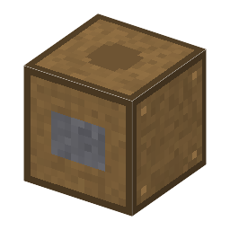
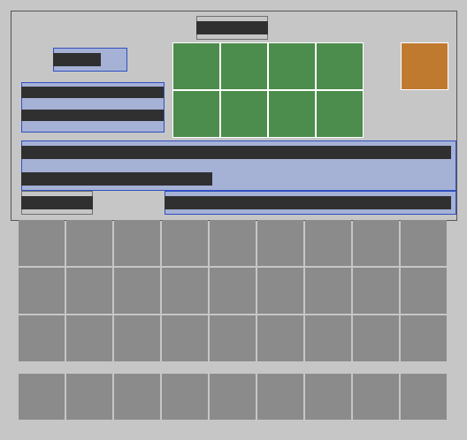

工程（12）
→ 組立台組み立て（transistor_radio）・5 秒 →
部品表で組み立てる。電気なし
→ 組立台組み立て（calculator）・10 秒 →
部品表で組み立てる。電気なし
→ 組立台組み立て（ai_chip）・30 秒 →
部品表で組み立てる。電気なし
→ 組立台組み立て（game_console）・10 秒 →
部品表で組み立てる。電気なし
→ 組立台組み立て（smartphone）・20 秒 →
部品表で組み立てる。電気なし
→ 組立台組み立て（microcomputer）・10 秒 →
部品表で組み立てる。電気なし
→ 組立台組み立て（math_coprocessor）・10 秒 →
部品表で組み立てる。電気なし
→ 組立台組み立て（mems_accelerometer）・5 秒 →
部品表で組み立てる。電気なし
